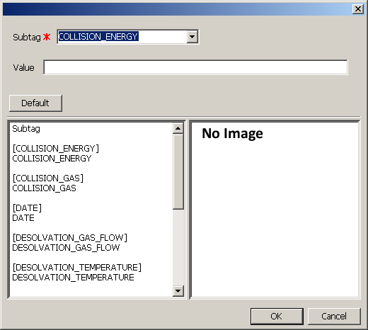
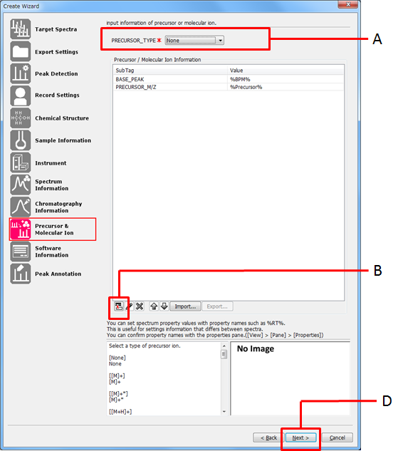
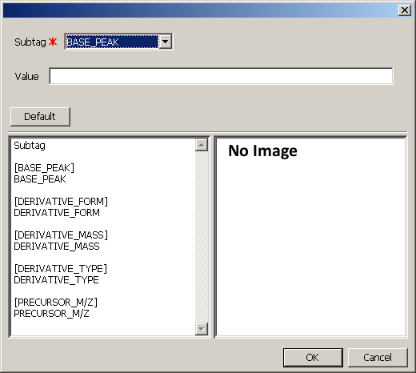
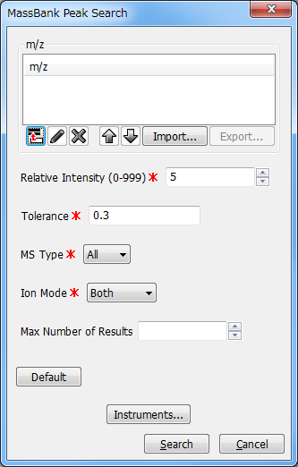
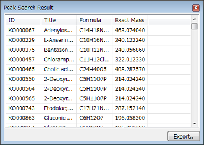

Select [Tools] in the menu bar and then select [Options] from the drop down menu.
The Options dialog appears.
The Options dialog can also be displayed by clicking the icon in the toolbar.
Select [Search Engine] > [MassBank] in the Options dialog.
Edit the settings for [MassBank URL], [Use Proxy], [Authors] and [Copyright].
Click [OK].
Select [Tools] in the menu bar and then select [MassBank] > [Create Peak Records] in the drop down menu.
The wizard for creating MassBank records starts.
Enter the settings in the Target Spectra page.
Select the spectra to be listed in the page.
- Sample Raw Data
All the spectra in the samples currently opened will be listed.
- Opened Data
All the spectra currently displayed will be listed.
Select the samples to be exported to MassBank record.
Select the spectra to be exported to MassBank record.
Check the [All] checkbox to select or deselect all the spectra in the list at once.
Click the icon in [If you want to create averaged spectrum records, input averaging information].
Click the icon in [Data Processed].
Click [Next >].
Enter the settings in the Export Settings page.
Enter two or three alphabet capital letters in [Prefix].
These letters will be the prefix for the file names of the exported MassBank records.
Enter a number in [Base Num.].
The file names of the exported MassBank records will have the suffix starting with this number.
Note. The general format of a MassBank accession value is "[Prefix][Number]". Its maximum length is eight characters. So the total length of [Prefix] + [Last Spectrum Number (Base Num + Number of selected spectra - 1)] must not exceed 8 characters.
e.g. ABC00001, XXX00015
See the MassBank manual at the URL shown below for more information about the prefix, especially for the submission of your records to MassBank.
Click [Browse] and select the folder in which the MassBank record files will be saved.
Click [Next >].
Enter the settings in the Peak Detection page.
Select the algorithm from the drop down list.
Click the icon in [Peak Filtering].
Enter the peak filtering condition so that only the necessary peaks will be detected.
For details on peak filtering, refer to ???.
Click [Next >].
Enter the settings in the Record Settings page.
Property values of each spectrum can be referred to in the record information by using the syntax, "%Property name%" (e.g. "%RT%" to refer the value of the RT property). You can confirm the property names with the Properties pane ([View] > [Pane] > [Properties]).
Enter a brief description of the spectrum record in [Title].
Select the license definition from the drop down list.
Click [Next >].
Enter the settings in the Chemical Structure page.
Select "Unknown", "Natural Product" or "Non Natural Product" from the drop down list.
Enter the category of the chemical compound in [Class Name].
Click the icon in [Name].
Enter the name of the chemical compound and click [OK].
Repeat steps C-D to add other items.
To change the settings, select the item and click the
 icon.
icon.
To delete the item, select the item and click the icon.
Click the icon in [Link].
Obtaining MOL files. MOL files are obtained from websites of public databases: Mass++ accesses the web page that contains the entry specified by the user, and obtain the MOL file.
Obtaining MOL files from KEGG. The terms of use for KEGG claim as cited below:
Academic users may freely use the KEGG website.
Non-academic users may use the KEGG website as end users for non-commercial purposes.
Any other use requires a license agreement. ( http://www.genome.jp/kegg/legal.html, http://www.pathway.jp/licensing/commercial.html)
Hence, if you plan to obtain MOL files from KEGG via Mass++ and use them for commercial purposes, at first, you should be licensed KEGG (See the Pathway Solutions website; http://www.pathway.jp/licensing/commercial.html)
Select the DB, then enter the accession and click [OK].
Repeat steps E-F to add other items.
To change the settings, select the item and click the
icon.
To delete the item, select the item and click the icon.
Enter the molecular formula and mass in [Chemical Structure].
Click [Import from mol file...] if you want to use a MOL file which you already have.
Importing a MOL file is recommended as it enables to display the steric structures. Besides, some other items can be input automatically with a MOL file.
When a public database containing a MOL file is specified at the step E, the MOL file will be automatically downloaded.
Click [Next >].
Enter the settings in the Sample Information page.
Enter the scientific name of biological species in [Scientific Name].
Enter database and accession for the biological species in [Biological Species in External Database].
Click the icon in [Sample Preparation].
Enter the tissue or cell used for the sample and click [OK].
Repeat steps C-D to add other items.
To change the settings, select the item and click the
icon.
To delete the item, select the item and click the icon.
Click [Next >].
Enter the settings in the Instrument page.
Select the vendor, name, and type of the instrument from the drop down list.
If the item applicable to your instrument is not listed, type them when the field is highlighted.
Click [Next >].
Enter the settings in the Spectrum Information page.
Select the MS stage and polarity from the drop down list.
Click the icon in [Additional Information].
Select the subtag then enter the value and click [OK].
Property values of each spectrum can be referred to in the record information by using the syntax, "%Property name%" (e.g. "%RT%" to refer the value of the RT property). You can confirm the property names with the Properties pane ([View] > [Pane] > [Properties]).
You can add a new subtag by typing when the field is highlighted.
Repeat steps B-C to add other items.
To change the settings, select the item and click the
icon.
To delete the item, select the item and click the icon.
Click [Next >].
Enter the settings in the Chromatography Information page.
Click the icon in [Chromatography Information].
Select the subtag then enter the value and click [OK].
Property values of each spectrum can be referred to in the record information by using the syntax, "%Property name%" (e.g. "%RT%" to refer the value of the RT property). You can confirm the property names with the Properties pane ([View] > [Pane] > [Properties]).
Repeat steps A-B to add other items.
To change the settings, select the item and click the
icon.
To delete the item, select the item and click the icon.
Click [Next >].
Enter the settings in the Precursor & Molecular Ion page.
Select the precursor type from the drop down list.
Click the icon in [Precursor/Molecular Ion Information].
Select the subtag then enter the value and click [OK].
Property values of each spectrum can be referred to in the record information by using the syntax, "%Property name%" (e.g. "%RT%" to refer the value of the RT property). You can confirm the property names with the Properties pane ([View] > [Pane] > [Properties]).
Repeat steps B-C to add other items.
To change the settings, select the item and click the
icon.
To delete the item, select the item and click the icon.
Click [Next >].
Enter the settings in the Software Information page.
Click the icon in [Data Processing].
Select the data processing done before peak detection and click [OK].
Repeat steps A-B to add other items.
To change the settings, select the item and click the
icon.
To delete the item, select the item and click the icon.
Enter the software information and peak detector information.
Click [Next >].
Enter the settings in the Peak Annotation page.
You can search a single spectrum against the MassBank database to find similar spectra.
While a spectrum whose peaks have already been detected is displayed, select [Tools] in the menu bar and then select [MassBank] > [Spectrum Search] from the drop down menu.
The MassBank Spectrum Search dialog appears.
Edit the values for [Tolerance Unit], [Tolerance], [Cutoff], [Precursor], [MS Type], [Ion Mode] and [Max Number of Results]. Click [Instruments] to edit the instrument list.
Click the [Search] button.
It might take several seconds to search the database. After that, the MassBank Spectrum Search Results pane (Refer to the section called ÅgSearch ResultsÅh) containing the hit spectra is displayed.
You can search multiple spectra against the MassBank database to find similar spectra.
While a spectrum, chromatogram or heatmap is displayed, Select [Tools] in the menu bar and then select [MassBank] > [Batch Search] from the drop down menu.
The MassBank Batch Search dialog appears.
Check the spectra you want to submit for searching and edit the values for [Search Title], [E-mail Address] and [Ion Mode]. Click [Instruments] to edit the instrument list.

Click [Submit] to submit the batch job.
If one or more spectra whose peaks are not detected are checked, the Detect Peaks dialog appears. Select a peak detection algorithm and click [OK].
Then the MassBank Job List dialog appears. (Refer to the section called ÅgBatch Job ListÅh.)

It might take several minutes or several hours for completion of batch search jobs. When each batch job is completed, an email is sent to the input email address.
You can search the MassBank database to find spectra which contain specific peaks.
Select [Tools] in the menu bar and then select [MassBank] > [Peak Search] from the drop down menu.
The MassBank Peak Search dialog appears.
Edit the values for [m/z], [Relative Intensity], [Tolerance], [MS Type] [Ion Mode] and [Max Number of Results]. Click [Instruments] to edit the instrument list.
Click [Search].
It might take several seconds to search the database. After that, the MassBank Peak Search Results pane (Refer to the section called ÅgSearch ResultsÅh) containing the hit spectra is displayed.

You can search the MassBank database to find spectra which contain specific peak differences.
Select [Tools] in the menu bar and then select [MassBank] > [Peak Difference Search] from the drop down menu.
The MassBank Peak Difference Search dialog appears.
Edit the values for [m/z Difference], [Relative Intensity], [Tolerance], [MS Type], [Ion Mode] and [Max Number of Results]. Click [Instruments] to edit the instrument list.
Click [Search].
It might take several seconds to search the database. After that, the MassBank Peak Difference Search Results pane (Refer to the section called ÅgSearch ResultsÅh) containing the hit spectra is displayed.